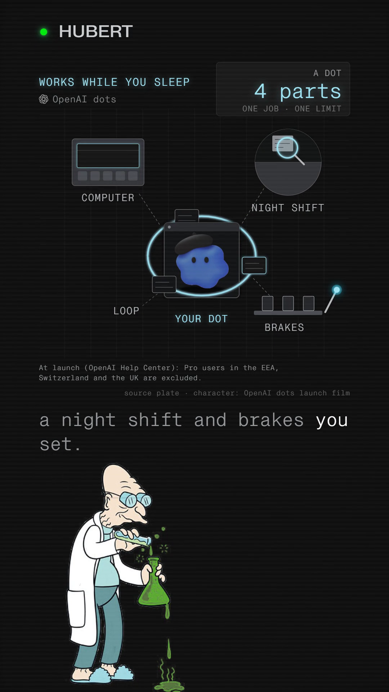

You commented DOTS — this is the rules card.
It works while you sleep. Four settings decide how far.
OpenAI's dot keeps working after you close the chat: its own cloud computer, its own browser, and connections to over 4,000 apps, by OpenAI's own count. What it is allowed to do without you is not left to chance. OpenAI's Help Center names four Custom Rules behaviours you set for it: take action without asking, take action if pre-approved, ask before taking action, or hand off to you entirely. Underneath those sits Auto-review, a separate safety system OpenAI built to check a planned step before the dot runs it — and OpenAI says the dot cannot switch off a required check, and your own approval cannot override the core safety requirements either.
Companion to the reel · Watch it on @huberttheinventor

Nº001 · The four settings
You choose how much it asks first
OpenAI's Help Center article “Getting started with your dot” names four Custom Rules behaviours, in this order, and they are the whole menu — there is no fifth setting hiding underneath.
| 1 | Take action without asking |
| 2 | Take action if pre-approved |
| 3 | Ask before taking action |
| 4 | Hand off to you |
You set these per rule, not once for the whole dot — OpenAI's launch post describes the same four options as allow, require approval, or block.
Nº002 · Email, money and sharing
The rule scales with what's at risk
OpenAI scales the sharing rule to how sensitive the data is. Sharing health data needs a named recipient — OpenAI's own example is “share my medical history with Dr. Thompson.” Sharing something like an email address or a phone number only needs a class of recipient, OpenAI's example being “any airline company.” A purchase on a saved card needs your approval first. Changing a password or moving money is handed back to you outright — OpenAI does not let the dot carry out either on its own. Three further actions need your confirmation every single time, not just the first, by OpenAI's own list: permanently deleting data, running software from an unrecognised source, and granting new security-sensitive access.
Nº003 · Auto-review
A system it can't switch off
Auto-review is a separate safety system, OpenAI's own term for it — not a second opinion from you. Before the dot runs a step, Auto-review checks it against your instructions, your rules and OpenAI's safety requirements. Each dot's cloud computer is isolated from other users, and OpenAI says the code a dot runs is kept apart from the systems that enforce these checks, which is why, in OpenAI's own words, a dot cannot switch off its own checks. If Auto-review blocks a step, OpenAI says the dot can ask you, try a different permitted approach, hand the step back, or stop. What neither the dot nor you can do is override the core safety requirements — OpenAI states that plainly. Its controls sit outside anything the dot itself can change.
“Dots can still make mistakes, so always review consequential work.”
OpenAI, “Introducing dots”
Nº004 · What OpenAI says it already does
OpenAI's own examples, not Hubert's guesses
Every job on this list is one OpenAI names itself in its launch post, not a hypothetical — including the one this film's job runs end to end.
| Engineering | Turns customer feedback into tested pull requests, with videos |
| Launch work | Revises launch material when the scope changes |
| Research | Reruns a scientist's analyses |
| Creator | Finds clip moments, writes show notes, drafts posts for approval |
| Early tester | Noticed a forgotten invoice, prepared it, sent it after he approved |
Nº005 · The honest scope
Who gets one, at launch
Pro users in the EEA, Switzerland and the UK are excluded at launch — OpenAI's Help Center's own line. Business Premium accounts get every supported region from day one; Enterprise gets a beta. Nothing here is drawn from the Codex sandbox documentation or any system-card figures — a dot's Auto-review is described only in OpenAI's own two launch posts and its Help Center, and this page states nothing beyond what those three pages say.
One system, taken apart.
Same treatment, different machine. No pitch, no thread-bait, and an unsubscribe link that works.
Take it with you
The rules card is this page: the assembled dot, its four parts, and the footnote on who gets one at launch, free, no email.
The List
One a week. And the other seven, now.
Confirm your address and the whole set arrives — all ten field guides, exactly as they are on the site, nothing held back for subscribers. After that, one new system taken apart every week. No pitch, no thread-bait, and an unsubscribe link that works.